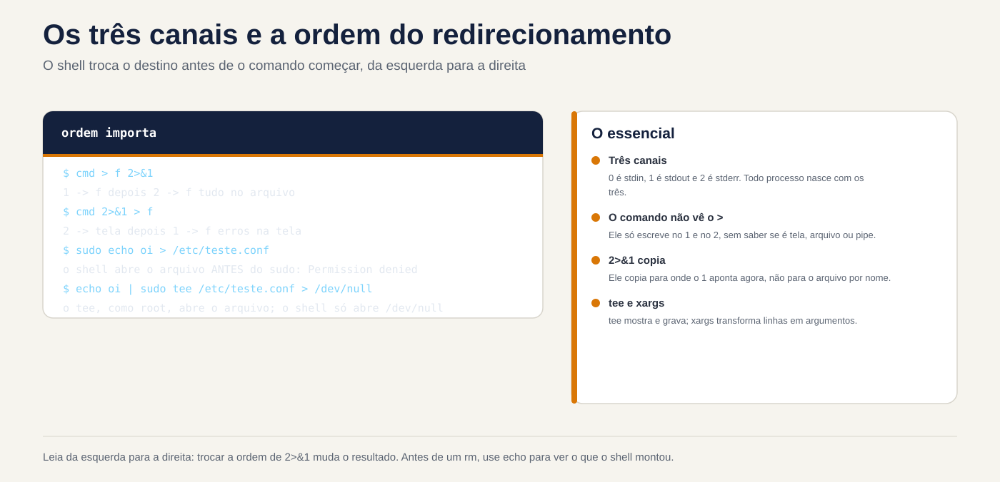
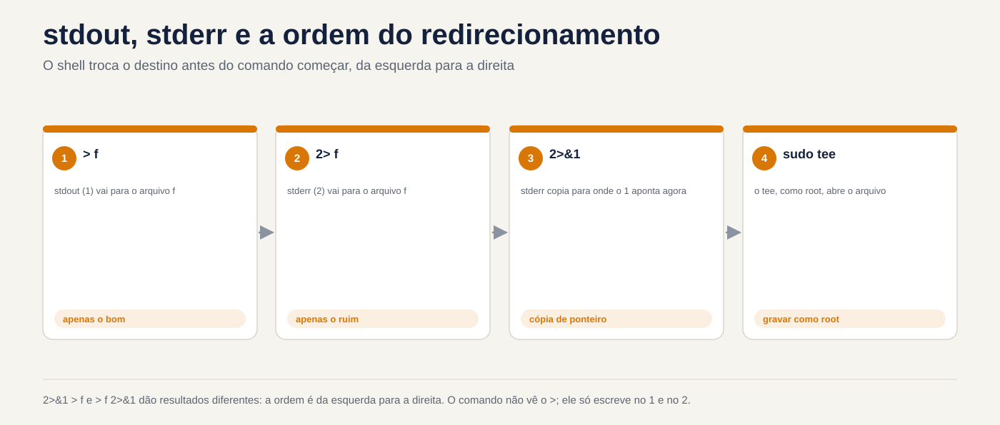

Lezione 3.1 · Fluxos a fundo
Primeira lezione do Módulo 3 e da Fase 2. No Módulo 2 você montou usuários, grupos e uma pasta de equipe que funciona de verdade. Due volte, nell'Lezione 2.7 e nell'Lezione 2.8, un comando con sudo fallisce per un motivo che non era autorizzato: o * foi espanso dalla seu shell, prima di o sudo iniziare. Oggi capisci tutta questa famiglia di problemi. La shell monta i flussi di un comando (dalle onde in alto, per le onde escreve, dove os erros) antes di rodarlo e non si sa che questo escreve sudo echo ... > /etc/arquivo, perde gli errori di backup all'interno del pipe e chiude il file errato con un xargs. Nella lezione 1.6 hai visto >, >>, 2> e |. Ora vediamo i dispositivi che l'amministratore usa tutto il giorno: tee, xargs, qui-doc, sostituzione del processo, /dev/null e o pipefail, che faz o pipe parar de esconder erro.
| File | Lezione 3.1 |
|---|---|
| Modulo | M3 · Testo e redattore, lezione 1 de 5 |
| Quando | Settimana 7 |
| Alla fine puoi | Prevedere il risultato di qualsiasi combinazione di >, >>, 2>, 2>&1 e &>, compreso l'ordine; scrivere nel file root con sudo tee, senza cadere in sudo echo >; creare file di configurazione con here-doc, sapendo quando la shell espande le variabili e quando no; usa xargs con nomi che contengono spazi e con input vuoti, nessuna sorpresa; confrontare la notizia di due VM con diff <( ) <( ); creare una pipe di backup che fallisca quando dovrebbe, con pipefail e PIPESTATUS; spiegare perché uno script #!/bin/sh si comporta diversamente su Rocky e Debian |
| Articoli di prova | LE 3.2 (redirezionamento e pipe) · LPIC-1 103.4 (uso di flussi, tubi e reindirizzamento: tee, xargs) · RHCSA (uso di reindirizzamento di entrata e uscita: >, >>, |, 2> e afins) |
| Prerequisiti | Lezione 1.6 (reindirizzamento e tubi di base); Lezione 2.5 (sudo); lezione 2.7 e lezione 2.8 (* ampliato prima del sudo e sudo sh -c); le due VM accessibili e ssh deb funzionante |
| Tempo | Intorno alle 2:30 |
| Istantanee | m3a1-inicio e m3a1-fim nelle due VM |
1 · Riscaldamento
Tre domande, a colpo d'occhio. Scrivi le risposte; la chiave di risposta viene visualizzata alla fine.
- Esegui
sudo echo "nameserver 1.1.1.1" > /etc/resolv.confe riceviPermission denied.sudoè configurato e funzionante. Guess: why? - Uno script di backup fa
tar cf - /dados | gzip > /backup/dados.tar.gze termina conecho "status: $?".tarfallisce a metà per mancanza di permesso. Indovina: lo stato mostra0o un altro numero? cmd > saida.txt 2>&1ecmd 2>&1 > saida.txt. Indovina: mantengono entrambi gli errori nel file?
2 · Perché è importante
I flussi sembrano un argomento per principianti finché non diventano un incidente:
| Il cosiddetto | La risposta sbagliata | Cosa provoca |
|---|---|---|
"Devo aggiungere una riga a /etc/hosts tramite lo script" | sudo echo "10.1.0.60 app" >> /etc/hosts | Permission denied. In fretta qualcuno lo cambia in chmod 666 /etc/hosts e il file è aperto per qualsiasi account |
| "Il backup viene eseguito ogni notte e dice OK, ma il file è di 40 byte" | Fiducia $? alla fine del tubo | Months of empty backups. Lo stato è quello di gzip, che ha compresso con successo un nulla |
| "cron invia email ogni mattina, spegnilo" | Aggiungi > /dev/null 2>&1 a tutto | L'e-mail si interrompe e con essa l'unico avvertimento che il lavoro non funziona da settimane |
"Elimina il vecchio .tmp dalla cartella dei caricamenti" | find /srv/uploads -name '*.tmp' | xargs rm | Il file relatorio final.tmp diventa relatorio e final.tmp; se c'è un relatorio, scompare al posto |
| "Lo script funziona su Rocky e dà errori di sintassi su Debian" | Riscrivere lo script in Debian | Due versioni della stessa sceneggiatura. Il problema era #!/bin/sh: in Debian, sh non è bash |
Chi lo risolve veramente sa chi apre ciascun file, quando e con quale identità. Questo è ciò che ti alleni oggi.
3 · Modello mentale
Ogni processo nasce con tre canali numerati, i descrittori di file:
0è l'input (stdin),1è l'output (stdout) e2è l'output dell'errore (stderr). Il reindirizzamento è il passaggio della shell al punto in cui punta ciascun numero, prima dell'avvio del comando, leggendo da sinistra a destra. Il comando non vede mai>: scrive solo su1e2, senza sapere se si tratta di screen, file o pipe.
Você digita: sudo echo oi > /etc/teste.conf
└─────┬─────┘ └───────┬───────┘
│ └─ 1º: o SEU shell (rodrigo) abre /etc/teste.conf
│ para escrita. Falha aqui: Permission denied.
└─ 2º: só depois o sudo rodaria, já como root. Nem chega a rodar.
Você digita: echo oi | sudo tee /etc/teste.conf > /dev/null
└──┬──┘ └──────────┬──────────┘ └────┬────┘
│ │ └─ o seu shell abre /dev/null (pode)
│ └─ o tee, rodando como ROOT, abre /etc/teste.conf (pode)
└─ o echo escreve "oi" no pipe, que vira a entrada do tee
A ordem do 2>&1 (o shell lê da esquerda para a direita):
cmd > f 2>&1 1 → f depois 2 → para onde o 1 aponta AGORA (f)
resultado: 1 → f 2 → f tudo no arquivo
cmd 2>&1 > f 2 → para onde o 1 aponta AGORA (tela) depois 1 → f
resultado: 1 → f 2 → tela erros na tela
Um pipe: tar cf - /dados | gzip > dados.tar.gz
└─── processo ───┘ └── processo ──┘
status 2 (falhou) status 0 ──▶ $? = 0 (só o último conta)
${PIPESTATUS[@]} = "2 0" com set -o pipefail: $? = 22>&1 non significa "unire gli errori con l'output". Significa "fai 2 punto dove 1 punta proprio adesso". È una copia, non un collegamento: se 1 cambia in seguito, 2 non segue.


4 · Concetto a strati
Essenziale
I reindirizzamenti, tutti in una volta. Quelli che già conosci e quelli che ti sei perso:
| Tu scrivi | Cosa fa la shell |
|---|---|
cmd > f | 1 passa a f cancellando il contenuto precedente |
cmd >> f | 1 va alla fine di f |
cmd 2> f | 2 va a f |
cmd > f 2>&1 | 1 e 2 vanno al f. Funziona con qualsiasi shell |
cmd &> f | Lo stesso, in forma breve. Solo in bash |
cmd 2> /dev/null | Elimina gli errori |
cmd < f | 0 si legge da f |
cmd1 | cmd2 | 1 di cmd1 diventa 0 di cmd2. 2 continua a visualizzare la schermata |
cmd1 |& cmd2 | 1 e 2 di cmd1 vanno al tubo. Solo nel bash; è uguale a 2>&1 | |
echo erro >&2 | Scrivere in 2. Ecco come uno script invia un messaggio di errore |
O /dev/null. Un dispositivo che accetta tutto e non memorizza nulla e che, una volta letto, termina immediatamente. Si usa per buttare via (2> /dev/null) e per dare un input vuoto ad un comando (cmd < /dev/null). Buttarlo via è una decisione: quello che va a /dev/null non ritorna.
O tee. Legge l'input e lo scrive in due posti: nell'output e nei file che gli dai. Il nome deriva dall'impianto idraulico: una T che divide il flusso.
dnf check-update | tee ~/atualizacoes.txt # sullo schermo e nel file
journalctl -b -p err | tee -a ~/erros-boot.txt # -a aggiunge invece di eliminareIn amministrazione, l'uso più importante di tee è un altro: scrivere nel file root. tee è colui che apre il file, e tee può eseguirlo con sudo:
echo "10.1.0.60 app" | sudo tee -a /etc/hosts > /dev/nullAlla fine > /dev/null rimuove dallo schermo solo la copia che tee scrive anche sull'uscita.
O xargs. Una pipe porta il testo all'input di un comando. Ma molti comandi non leggono l'input: vogliono argomenti. rm, ls, chmod, ssh ignorano ciò che arriva tramite 0. xargs legge l'input e lo trasforma in argomenti:
echo "/etc/hostname /etc/os-release" | ls -l # ls ignora la voce ed elenca la cartella corrente
echo "/etc/hostname /etc/os-release" | xargs ls -l # xargs esegue: ls -l /etc/hostname /etc/os-releaseO qui-doc. Un blocco di testo che diventa l'input di un comando, scritto nel terminale o nello script stesso. È il modo pulito per creare un intero file di configurazione:
sudo tee /etc/motd > /dev/null <<'EOF'
Servidor de laboratório. Mudanças só com chamado aberto.
EOF<<'EOF' dice: "l'input è tutto ciò che arriva fino a una riga che ha solo EOF". Il nome EOF è convenzione; può essere qualsiasi parola.
Intermedio
L'ordine è importante, sempre. La shell applica i reindirizzamenti da sinistra a destra e ogni N>&M copia la destinazione corrente di M. Ecco perché:
ls /etc/hostname /naoexiste > f 2>&1 # tutto in f
ls /etc/hostname /naoexiste 2>&1 > f # l'errore sullo schermo, l'elenco in f
ls /etc/hostname /naoexiste 2>&1 | wc -l # 2: nel tubo, il | è montato PRIMA dei reindirizzamentiLa terza riga inganna molte persone: | viene collegato per primo, quindi quando viene letto 2>&1, 1 è già la pipe e i due vanno a wc.
Le virgolette nel qui-doc decidono tutto. Senza virgolette nella parola (<<EOF), la shell espande $VARIAVEL, $(comando) e `comando` durante la creazione del testo. Tra virgolette (<<'EOF'), il testo è esattamente come scritto. Per generare uno script, si vogliono quasi sempre le virgolette: le variabili devono essere lette quando lo script viene eseguito, non quando lo si crea.
cat <<EOF
criado em $(hostname) por $USER
EOF
# criado em rocky-lab por rodrigo
cat <<'EOF'
criado em $(hostname) por $USER
EOF
# criado em $(hostname) por $USERIl <<-EOF, con un trattino, rimuove le tabulazioni dall'inizio di ogni riga, in modo da poter rientrare il blocco all'interno di un if in uno script. Rimangono solo tabulazioni: rimangono spazi.
O qui-stringa. <<< fornisce una singola stringa come input, senza echo e senza barra verticale:
tr a-z A-Z <<< "rocky-lab" # ROCKY-LAB
read -r usuario uid <<< "ana 2001"O xargs e nomi con spazi. Per impostazione predefinita, xargs separa l'input in qualsiasi spazio, tabulazione o interruzione di riga e interpreta anche virgolette e barre rovesciate. Un file chiamato relatorio final.txt accetta due argomenti e uno chiamato conta d'agua.txt fornisce unmatched single quote. La soluzione è separarlo con un carattere che non può esistere nel nome del file, il null (\0), su entrambi i lati:
find ~/lab31 -name '*.txt' -print0 | xargs -0 ls -lOppure fare a meno di xargs, con -exec ... + del find stesso, che crea la riga di comando senza passare attraverso il testo:
find ~/lab31 -name '*.txt' -exec ls -l {} +Opzioni di xargs che utilizzerete:
| Opzione | Cosa fa | Esempio |
|---|---|---|
-0 | Voce separata da null (coppia find -print0) | find . -print0 | xargs -0 ... |
-r | Non viene eseguito nulla se l'input è vuoto | ... | xargs -r rm |
-n N | Numero massimo di N argomenti per esecuzione | xargs -n 1 ping -c1 |
-I{} | Una esecuzione per riga, sostituendo {} con | xargs -I{} cp {} {}.bak |
-t | Mostra ogni comando prima di eseguire | xargs -t chmod 640 |
-P N | Fino a N esecuzioni contemporaneamente | xargs -P 4 -n 1 ... |
-r merita attenzione: xargs di GNU, che è quello per entrambe le VM, esegue il comando una volta, senza argomenti, quando l'input è vuoto. Un ls -l senza argomenti elenca la cartella corrente; a chown -R ana senza discutere si limita a lamentarsi. Ma un report che dovrebbe essere vuoto appare pieno di cose che non hanno nulla a che fare con esso.
Sostituzione del processo. <(comando) esegue il comando e fornisce il suo output come se fosse un file. È per i comandi che accettano solo nomi di file, come diff, che confronta due file:
diff <(ssh deb 'cat /etc/os-release') /etc/os-release
echo <(true) # /dev/fd/63: "file" è un descrittore aperto da bashSenza questo, salveresti due output in file temporanei, li confronteresti e li cancelleresti. Viene da bash: sh di Debian non capisce.
La pipe nasconde errori. Lo stato di una pipe è quello del comando last. In un dump | gzip > arquivo, se dump muore nel mezzo, gzip comprime quello che è arrivato, finisce con 0, e tutto il tubo dice che ha funzionato. Due strumenti bash:
false | true; echo "$?" # 0
false | true; echo "${PIPESTATUS[@]}" # 1 0: lo stato di ciascun comando, in ordine
set -o pipefail
false | true; echo "$?" # 1: la pipe fallisce se qualsiasi comando falliscePIPESTATUS viene sovrascritto dal comando successivo, incluso un echo: leggilo immediatamente o copialo in un'altra variabile. set -o pipefail è valido per la shell da cui l'hai chiamato, fino al termine; in uno script, inseriscilo all'inizio.
Windows Bridge
| Su Windows (cmd o PowerShell) | Su Linux | La differenza che conta |
|---|---|---|
dir > lista.txt 2>&1 (cmd) | ls > lista.txt 2>&1 | Lo stesso, compreso l'ordine. cmd imparato da Unix |
> NUL | > /dev/null | In Linux è un vero e proprio file di dispositivo, con proprietario e modalità |
Tee-Object -FilePath f | tee f | tee accetta più file e -a |
ForEach-Object { ... } con l'oggetto nel tubo | xargs | PowerShell passa oggetti nella pipe; Linux passa testo e xargs deve sapere dove finisce un elemento e inizia il successivo |
@" ... "@ e @' ... '@ (stringa qui) | <<EOF e <<'EOF' (qui-doc) | La stessa idea delle virgolette: le virgolette doppie espandono le variabili, le virgolette singole no |
Compare-Object (cmd1) (cmd2) | diff <(cmd1) <(cmd2) | Su Linux, l'output diventa un "file" /dev/fd/N |
$LASTEXITCODE e $? | $? e ${PIPESTATUS[@]} | In PowerShell viene visualizzato un errore al centro della pipe; nel bash, senza pipefail, scompare |
| "Esegui come amministratore" sull'intero terminale | sudo in un comando oppure sudo tee in un file | In Linux, l'elevazione avviene per processo: il > della tua shell resta tu |
Avanzato
sudo e la shell, la regola generale. La tua shell fa quattro cose prima che sudo esista: espande * e ? (Lezione 2.7), espande $VARIAVEL e $(comando), apre reindirizzamenti e collega pipe. Tutto questo accade come te. I tre output, a seconda dei casi:
| Vuoi | Utilizzare |
|---|---|
| Scrivi o aggiungi a un file root | ... | sudo tee [-a] arquivo > /dev/null |
Una riga con reindirizzamenti, * o pipe, tutto come root | sudo sh -c 'cmd1 | cmd2 > /etc/arquivo' |
| Un intero blocco di configurazione | sudo tee arquivo > /dev/null <<'EOF' ... EOF |
| Leggere un file da root in una pipe | sudo cat arquivo | grep ...; grep non necessita di root |
Il noclobber. Con set -o noclobber, > rifiuta di cancellare un file già esistente (cannot overwrite existing file). Quando vuoi veramente sovrascrivere, usa >|. È una buona rete di sicurezza per la shell interattiva di chi amministra il server.
Reindirizza l'intero script. Il exec senza comandi modifica i descrittori della propria shell, finché non termina. La prima riga in basso, all'inizio di uno script, invia tutto ciò che scrive, output ed errore, allo schermo e ad un log contemporaneamente:
exec > >(tee -a /var/log/meu-script.log) 2>&1
exec 2>> /var/log/meu-script.err # oppure: solo gli errori, per un filesh non è bash ovunque. In Rocky, /bin/sh è lo stesso bash, in esecuzione in modalità compatibilità POSIX: quasi tutto, da bash continua a funzionare. In Debian, /bin/sh è dash, una shell più piccola e veloce che comprende solo lo standard POSIX. In uno script #!/bin/sh su Debian o in uno script sh -c '...':
bash Risorsa | Nel dash |
|---|---|
<( ) | Syntax error: "(" unexpected |
&> f | Leggi come & (eseguito in background) seguito da > f. Il comando va in fondo e l'output non viene reindirizzato. Nessun messaggio di errore |
|& | Errore di sintassi |
<<< | Errore di sintassi |
PIPESTATUS | Non esiste: arriva vuoto |
set -o pipefail | Dipende dalla versione di dash: è entrato nello standard POSIX solo nel 2024. In un #!/bin/sh, non contare su di esso |
La soluzione non è evitare bash: è scrivere #!/bin/bash quando lo script usa bash, ed eseguirlo con bash script.sh, mai con sh script.sh.
La pipe denominata. Un mkfifo /tmp/canal crea un file di tipo p, che funziona come una pipe con un nome: un processo scrive, un altro legge e non viene scritto nulla sul disco. Questo è ciò che <( ) fa sotto, in modo anonimo.
Ciò che rientra nel test
Linux Essentials e LPIC-1 (103.4):
- I numeri
0,1e2e i nomi stdin, stdout e stderr. - La differenza tra
>e>>e tra2>&1prima e dopo>. - Il
tee, con e senza-a, e a cosa serve in una pipe. - Il
xargs: cosa fa, il-0confind -print0, il-ne-I. - Qui-doc (
<<) e qui-string (<<<). - Domande di "quale comando scrive l'output sullo schermo e in un file contemporaneamente" (
tee) e "quale comando trasforma l'output di uno in argomenti di un altro" (xargs).
RHCSA:
- Usa il reindirizzamento per consegna risultato: "salva l'elenco dei file di tale utente in
/root/arquivos", "scrivi le righe contenenti X in/root/linhas". Lo script di correzione legge il file: se hai inviato l'errore o hai dimenticato>, perdi il problema. - Crea file di configurazione root senza editor, con
sudo teeo here-doc.
5 · Rocky × Debian
| Cosa | laboratorio-roccioso | debian-lab | Come controllare |
|---|---|---|---|
/bin/sh | bash (modalità POSIX) | dash | readlink -f /bin/sh |
rodrigo shell di accesso | bash | bash | getent passwd rodrigo |
<( ), &>, PIPESTATUS in un sh -c | Funzionano | Errore di sintassi o comportamento errato senza preavviso | sh -c 'diff <(echo a) <(echo b)' |
tee, xargs, find | GNU (coreutils e findutils) | GNU (coreutils e findutils) | xargs --version | head -1 |
xargs con voce vuota | Esegui il comando una volta | Esegui il comando una volta | true | xargs echo ok |
Il testo registra in /var/log | rsyslog installati: /var/log/messages e /var/log/secure | Debian 12 non include rsyslog: i log sono solo nel journal | ls /var/log/messages /var/log/secure /var/log/syslog /var/log/auth.log |
Leggere il giornale di sistema come rodrigo | Per gruppo wheel | Solo con sudo oppure nel gruppo adm | journalctl -n 3, senza sudo |
La riga di log avrà importanza in tutto il Modulo 3: alla stessa domanda ("chi ha sbagliato la password in SSH?") si risponde con un file in Rocky e con journalctl in Debian. Una pipe ben assemblata funziona allo stesso modo in entrambi, purché si sappia cosa c'è al suo input.
6 · Laboratorio guidato
Sei rodrigo, in rocky-lab, e raggiungi debian-lab attraverso ssh deb. Gli esperimenti si trovano in ~/lab31, su entrambe le VM; Solo il passo 2 modifica il file di sistema, /etc/lab31.conf, e rimane fino alla fine del modulo, da controllare dopo il riavvio. Il passaggio 7 è la sfida della lezione.


Passaggio 0 · Istantanea, percorso e quale sh è quale
In Proxmox, acquisire l'istantanea m3a1-inicio delle due VM. In rocky-lab:
eval "$(ssh-agent -s)"; ssh-add
ssh -o BatchMode=yes deb hostname
readlink -f /bin/sh; ssh deb 'readlink -f /bin/sh'
mkdir -p ~/lab31; ssh deb 'mkdir -p ~/lab31'
cd ~/lab31debian-lab
/usr/bin/bash
/usr/bin/dashSalva le ultime due righe: in rocky-lab, sh è bash; in Debian-Lab è dash. Il passo 6 mostra cosa cambia.
Passo 1 · L'ordine di 2>&1
Un file che esiste e uno che non esiste, per avere output e errore nello stesso comando:
ls /etc/hostname /naoexiste > a.txt 2>&1Non appare nulla sullo schermo: entrambe le righe vanno a a.txt. Ora, con 2>&1 prima:
Decidi 1 · Esegui ls /etc/hostname /naoexiste 2>&1 > b.txt. Cosa appare sullo schermo e cosa c'è in b.txt?
- A) Niente sullo schermo;
b.txtha le due righe - B) L'errore sullo schermo;
b.txtha solo/etc/hostname - C) Le due righe sullo schermo;
b.txtè vuoto - D) Niente sullo schermo;
b.txtha solo l'errore
Scegliere la lettera prima di guardare la tabella.
ls /etc/hostname /naoexiste 2>&1 > b.txt
echo "--- a.txt"; cat a.txt; echo "--- b.txt"; cat b.txt| Se hai selezionato | Risultato | Perché |
|---|---|---|
| A | ❌ Sbagliato | Sarebbe il risultato del primo comando. Qui, la shell legge prima 2>&1, quando 1 punta ancora allo schermo, e copia quella destinazione su 2. Solo allora > b.txt cambia 1. |
| B | ✅ Giusto | ls: cannot access '/naoexiste': No such file or directory sullo schermo e b.txt solo con /etc/hostname. Il 2 ha avuto il vecchio destino del 1. |
| C | ❌ Sbagliato | È stato applicato > b.txt: l'output normale è andato al file. Solo l'errore è stato tralasciato. |
| D | ❌ Sbagliato | Invertire i ruoli. 2>&1 non "scambia" 1 con 2; copia la destinazione da 1 a 2. |
Per risolvere: leggi i reindirizzamenti da sinistra a destra e tratta 2>&1 come "2 va dove 1 è ora". Vuoi tutto nel fascicolo? Il file per primo: > f 2>&1.
Passo 2 · Il sudo che non raggiunge il >
Vuoi creare un file di configurazione del sistema a una riga:
sudo echo "lab31=ok" > /etc/lab31.conf-bash: /etc/lab31.conf: Permission deniedIl sudo è configurato e la password non è stata nemmeno chiesta.
Decidi 2 · Perché il Permission denied?
- A)
echoè un comando interno della shell, esudonon esegue comandi interni - B) La tua shell apre
/etc/lab31.conf, comerodrigo, prima dell'avvio disudo - C) SELinux protegge
/etce bloccaecho - D) Manca
-i: consudo -ifunziona
Scegli la lettera prima di guardare la tabella.
ls -l /etc/lab31.conf
ssh deb 'sudo echo "lab31=ok" > /etc/lab31.conf'| Se hai selezionato | Risultato | Perché |
|---|---|---|
| A | ❌ Sbagliato | sudo cerca un programma e trova /usr/bin/echo. Funzionerebbe come root, se mai funzionasse. Il file non è stato nemmeno creato e l'errore proveniva da -bash e non da echo. |
| B | ✅ Giusto | Il reindirizzamento avviene dalla shell. bash di rodrigo tenta di aprire /etc/lab31.conf in scrittura, fallisce e si arrende prima di chiamare sudo. È la stessa famiglia di * della lezione 2.7: tutto ciò che la shell fa prima del comando, lo fa come te. |
| C | ❌ Sbagliato | debian-lab non ha SELinux e dà lo stesso errore, come ha appena mostrato ssh deb. Anche un blocco SELinux non verrebbe visualizzato come errore bash. |
| D | ⚠️ Funziona, ma | Con sudo -i si apre una shell root e lì funziona >. Ma è un'intera shell di root scrivere una riga, in un terminale dove anche l'errore di battitura successivo viene eseguito come root. E in uno script non funziona: sudo -i aspetta che tu digiti. |
Per risolvere: Permission denied proveniente da -bash: in un comando con sudo significa che è stata la shell a fallire, non il comando. Cerca un >, un * o un $( ) nella riga.
I tre modi giusti, uno alla volta:
echo "lab31=ok" | sudo tee /etc/lab31.conf
echo "criado=$(date +%F)" | sudo tee -a /etc/lab31.conf > /dev/null
sudo sh -c 'echo "via=sh-c" >> /etc/lab31.conf'
cat /etc/lab31.conf
stat -c '%A %U:%G %n' /etc/lab31.confIl primo tee mostra lab31=ok sullo schermo, perché copia anche nell'output. La seconda non mostra nulla: > /dev/null ha buttato via la copia. Alla fine, il file ha tre righe ed è -rw-r--r-- root:root, creato da tee, come root.
In debian-lab, in blocco, con here-doc. Inserisci la VM, perché sudo chiederà una password e ha bisogno del terminale:
ssh deb
sudo tee /etc/lab31.conf > /dev/null <<'EOF'
lab31=ok
via=here-doc
EOF
cat /etc/lab31.conf
exitPasso 3 · L'here-doc che ha bloccato il valore sbagliato
Vuoi un piccolo script, che dice su quale macchina è in esecuzione, da copiare su entrambe le VM. In rocky-lab:
cat > ~/lab31/info.sh <<EOF
#!/bin/bash
echo "máquina: $(hostname)"
echo "usuário: $USER"
EOF
chmod +x ~/lab31/info.sh
ssh deb 'cat > ~/lab31/info.sh; chmod +x ~/lab31/info.sh' < ~/lab31/info.shL'ultima riga copia lo script in debian-lab senza scp: < consegna il file locale come input a ssh e cat dall'altro lato lo scrive.
Decidi 3 · Esegui ssh deb '~/lab31/info.sh'. Qual è la prima riga dell'output?
- A)
máquina: debian-lab - B)
máquina: rocky-lab - C)
máquina: $(hostname) - D) Un errore da
bash, perché il file proviene da un'altra macchina
Scegliere la lettera prima di guardare la tabella.
ssh deb '~/lab31/info.sh'
cat ~/lab31/info.sh| Se hai selezionato | Risultato | Perché |
|---|---|---|
| A | ❌ Sbagliato | Sarebbe giusto che lo script contenesse $(hostname) al suo interno. cat dimostra che non è così: la riga è echo "máquina: rocky-lab". |
| B | ✅ Giusto | Senza virgolette in EOF, la shell si è espansa $(hostname) e $USER durante la creazione del file, in Rocky-Lab. La sceneggiatura è nata con valori congelati. In Debian-Lab ripete solo ciò che ha ricevuto. |
| C | ❌ Sbagliato | Sarebbe il testo del file con <<'EOF'. Anche così, quando esegui, lo script mostrerebbe il nome corretto, perché poi bash dello script si espande. |
| D | ❌ Sbagliato | Uno script è testo: è valido su qualsiasi macchina con l'interprete di prima riga. Debian ha /bin/bash. |
Per risolvere: il qui-doc che genera script o configurazione con variabili per successivo richiede virgolette: <<'EOF'. Senza virgolette, solo quando vuoi veramente il valore di now, come una data di creazione.
Correggilo, copialo di nuovo ed eseguili entrambi:
cat > ~/lab31/info.sh <<'EOF'
#!/bin/bash
echo "máquina: $(hostname)"
echo "usuário: $USER"
EOF
ssh deb 'cat > ~/lab31/info.sh' < ~/lab31/info.sh
~/lab31/info.sh; ssh deb '~/lab31/info.sh'Ora ogni VM dice il proprio nome. Non è stato necessario ripetere chmod +x: > riscrive il contenuto e la modalità file rimane.
Passo 4 · xargs e il nome con spazio
Due file, uno dei quali con uno spazio nel nome, come accade in qualsiasi cartella che riceve file da persone:
mkdir -p ~/lab31/xa
touch ~/lab31/xa/notas.txt "$HOME/lab31/xa/relatorio final.txt"
ls ~/lab31/xaVuoi il ls -l di tutti i .txt in questa cartella, trovato da find.
Decidi 4 · Esegui find ~/lab31/xa -name '*.txt' | xargs ls -l. Cosa succede?
- A)
ls -lmostra entrambi i file - B)
ls -lmostranotas.txte restituisce due errori, uno perrelatorioe uno perfinal.txt - C)
xargsrifiuta l'ingresso per spazio - D)
ls -lmostra solorelatorio final.txt
Scegliere la lettera prima di consultare tabella.
find ~/lab31/xa -name '*.txt' | xargs ls -l| Se hai selezionato | Risultato | Perché |
|---|---|---|
| A | ❌ Sbagliato | Sarebbe vero se i xargs fossero separati solo dalla riga. Separa con qualsiasi spazio e il nome diventa due argomenti. |
| B | ✅ Giusto | ls: cannot access '/home/rodrigo/lab31/xa/relatorio': No such file or directory e ls: cannot access 'final.txt': .... Con ls è solo un errore sullo schermo. Con rm se nella cartella ci fosse un file relatorio questo verrebbe cancellato nel posto giusto. |
| C | ❌ Sbagliato | xargs si lamenta solo delle virgolette non accoppiate (un nome come conta d'agua.txt). Spazio che accetta e separa, senza preavviso. |
| D | ❌ Sbagliato | Il nome con lo spazio è esattamente ciò che si perde. |
Da risolvere: find | xargs senza -print0 e -0 è un bug che prevede il nome con spazio. Utilizzare la coppia, o -exec ... + di find.
Entrambe le correzioni:
find ~/lab31/xa -name '*.txt' -print0 | xargs -0 ls -l
find ~/lab31/xa -name '*.txt' -exec ls -l {} +Entrambe mostrano entrambi i file. -print0 termina ogni nome con un byte nullo e -0 separa xargs da solo. -exec ... + assembla direttamente la riga di comando, senza girare il testo in mezzo.
Passo 5 · La pipe che giace
Un backup in una riga, come appare in molti script cron: tar pacchetti, gzip comprime. Uno dei percorsi non esiste, come una directory che qualcuno ha rinominato:
tar cf - /etc/hostname /etc/naoexiste | gzip > ~/lab31/bkp.tar.gz
echo "status: $?"tar segnala sullo schermo: tar: /etc/naoexiste: Cannot stat: No such file or directory e tar: Exiting with failure status due to previous errors.
Decidere 5 · Che numero mostra echo?
- A)
0 - B)
2, lo stato ditar - C)
1 - D)
141, perché il tubo è stato interrotto
Scegliere la lettera prima di guardare la tabella.
tar cf - /etc/hostname /etc/naoexiste | gzip > ~/lab31/bkp.tar.gz; echo "${PIPESTATUS[@]}"| Se hai selezionato | Risultato | Perché |
|---|---|---|
| A | ✅ Giusto | Lo stato di una pipe è quello del comando ultimo, e gzip ha compresso ciò che ha ricevuto senza problemi. PIPESTATUS mostra la verità: 2 0. In un cron, && echo OK successivo direbbe OK ogni giorno. |
| B | ❌ Sbagliato | 2 esiste, ma è nascosto in PIPESTATUS. Senza pipefail la pipe non lo inoltra. |
| C | ❌ Sbagliato | Nessuno dei due comandi terminava con 1. tar di GNU usa 2 per errore fatale e 1 per "un file è cambiato mentre lo stavo leggendo". |
| D | ❌ Sbagliato | 141 (128 + 13, il segnale SIGPIPE) appare quando il comando di destra chiude anticipatamente la pipe, come un head, e quello di sinistra muore durante la scrittura. Qui gzip leggi tutto. |
Per correggere: in una pipe, $? è lo stato dell'ultimo comando. Per backup, distribuzione e tutto ciò che decide che "ha funzionato", attiva pipefail o seleziona PIPESTATUS.
Attiva pipefail in questa shell e ripeti:
set -o pipefail
tar cf - /etc/hostname /etc/naoexiste | gzip > ~/lab31/bkp.tar.gz; echo "status: $?"
tar tzf ~/lab31/bkp.tar.gzOra lo stato è 2. tar tzf mostra che etc/hostname è nell'archivio: il backup non è vuoto, è incompleto, il che è peggio, perché sembra buono. pipefail rimane in questa shell finché non si esce o si esegue set +o pipefail; Lasciarlo acceso per il passaggio 7.
Passo 6 · Due VM, una diff e una sh da Debian
Confronta l'identificazione delle due VM, senza file temporaneo:
diff <(grep -E '^(ID|VERSION_ID)=' /etc/os-release | sort) \
<(ssh deb "grep -E '^(ID|VERSION_ID)=' /etc/os-release | sort")1,2c1,2
< ID="rocky"
< VERSION_ID="9.6"
---
> ID=debian
> VERSION_ID="12"Il numero di versione di Rocky potrebbe essere diverso. < riporta le righe del primo "file", e > quelle del secondo. A diff furono dati due nomi, /dev/fd/63 e /dev/fd/62, e non ho mai saputo che fossero commando. Il | sort su entrambi i lati è tale che l'ordine delle righe non diventi una differenza.
Ora, la stessa risorsa all'interno di un sh -c, come accade in uno script #!/bin/sh o in una riga cron:
Decidere 6 · Eseguire sh -c 'diff <(echo a) <(echo b)' in rocky-lab e debian-lab. Cosa succede?
- A) Funziona in entrambi:
diffmostraaeb - B) Dà un errore in entrambi:
<( )funziona solo nel terminale - C) Funziona in rocky-lab e dà un errore di sintassi in debian-lab
- D) Funziona in debian-lab e dà un errore in rocky-lab
Scegli la lettera prima di guardare la tabella.
sh -c 'diff <(echo a) <(echo b)'
ssh deb "sh -c 'diff <(echo a) <(echo b)'"| Se hai selezionato | Risultato | Perché |
|---|---|---|
| A | ❌ Sbagliato | Sarebbe vero se sh fosse in entrambi lo stesso programma. Il passaggio 0 ha dimostrato che non lo è. |
| B | ❌ Sbagliato | <( ) proviene da bash, interattivo o meno. Uno script #!/bin/bash utilizza a piacimento. |
| C | ✅ Giusto | In Rocky-Lab, sh è bash in modalità POSIX, che accetta <( ). In Debian-Lab, dash risponde a sh: 1: Syntax error: "(" unexpected. Stesso script, due distribuzioni, due risultati. |
| D | ❌ Sbagliato | Invertire le VM. Il sh più limitato è quello di Debian. |
Per risolvere: lo script che utilizza la risorsa bash inizia con #!/bin/bash e viene eseguito con bash script.sh. "Funziona su Rocky" non prova nulla su Debian, perché sh di Rocky è bash.
Il caso peggiore di dash non dà errori. Vedi &>:
ssh deb "sh -c 'ls /naoexiste &> /dev/null; echo fim'"L'errore ls appare sullo schermo e talvolta dopo fim. dash leggi ls /naoexiste & (esegui in background) e > /dev/null (un reindirizzamento da solo, senza comando). ls è andato fino in fondo, senza alcun reindirizzamento. In uno script cron, questo è l'output che pensavi fosse disattivato e un comando che non è terminato quando pensavi. La modalità portatile è > /dev/null 2>&1.
Passo 7 · Sfida in lezione: il report delle due VM
L'attività, come si otterrebbe in un ticket: "Voglio un report delle due VM, in un file, con il nome della macchina, il uptime e l'uso del disco di root. Errori in un file separato. Voglio vederlo sullo schermo mentre è in esecuzione. E se qualche parte fallisce, il comando deve terminare con un errore, affinché il monitoraggio possa rilevarlo it."
Provalo tu stesso prima di leggere la soluzione. I pezzi: un gruppo di comandi { ...; }, ssh deb, 2>, tee e pipefail.
La soluzione:
set -o pipefail
{ hostname; uptime; df -h /; ssh deb 'hostname; uptime; df -h /'; } 2> ~/lab31/erros.txt | tee ~/lab31/relatorio.txt
echo "status: $?"
wc -l ~/lab31/relatorio.txt ~/lab31/erros.txt{ ...; } riunisce i comandi in un unico blocco, con un'uscita e uno stato. Il 2> del gruppo rimanda gli errori di tutti al erros.txt. tee mostra e registra. Lo stato è 0 e erros.txt ha righe 0.
Ora simula l'errore: debian-lab inattivo. Sostituisci deb con deb-x, un nome che non esiste:
{ hostname; uptime; df -h /; ssh deb-x 'hostname; uptime; df -h /'; } 2> ~/lab31/erros.txt | tee ~/lab31/relatorio.txtDecidi 7 · Con pipefail attivato, quale stato mostra echo "status: $?" subito dopo?
- A)
0, perchéteeha scritto il file - B)
255, lo stato dissh - C)
1, perché uno dei comandi falliti - D)
2, perché si è verificato un errore nell'output dell'errore
Scegliere la lettera prima di guardare la tabella.
echo "status: $?"
cat ~/lab31/erros.txt| Se hai selezionato | Risultato | Perché |
|---|---|---|
| A | ❌ Sbagliato | Sarebbe il risultato senza pipefail: l'ultimo comando nella pipe è tee, che è finito bene. Con pipefail vale l'ultimo stato diverso da zero del tubo. |
| B | ✅ Giusto | ssh utilizza 255 per il proprio errore (Could not resolve hostname deb-x, in erros.txt). Il gruppo termina con lo stato del suo ultimo comando, ssh; pipefail va oltre. Il monitoraggio vede 255 e sa che si trattava della connessione, non del comando remoto. |
| C | ❌ Sbagliato | pipefail non riassume in 1: va oltre il numero effettivo, che dice cosa non è riuscito. |
| D | ❌ Sbagliato | La scrittura in 2 non modifica alcuno stato. Lo stato è il numero con cui termina ciascun processo. |
Da risolvere: lo stato di un gruppo { } è quello dell'ultimo comando al suo interno. Se ssh deb-x fosse all'inizio del gruppo e df alla fine, il gruppo finirebbe con 0, anche con pipefail. Per un report che deve fallire in qualsiasi momento, eseguirlo in uno script con set -e -o pipefail, che ritorna in dettaglio nel modulo script.
Riporta il report allo stato buono, eseguendo nuovamente la riga con deb.
7 · Interrompi e correggi
Interruzione A · Il backup che diceva OK
Lo scenario: uno script di backup della configurazione viene eseguito ogni giorno in cron e scrive sempre OK nel registro. Nessuno ha mai avuto bisogno di ripristinare. Assembla lo script così com'è in produzione, in rocky-lab:
cat > ~/lab31/backup.sh <<'EOF'
#!/bin/bash
destino=~/lab31/etc-$(date +%F).tar.gz
tar cf - /etc/lab31.conf /etc/hostname /etc/naoexiste 2>/dev/null | gzip > "$destino" && echo "OK: $destino"
EOF
chmod +x ~/lab31/backup.sh
~/lab31/backup.shObserve. L'output è OK: /home/rodrigo/lab31/etc-2026-11-03.tar.gz (con la data odierna), senza alcun avviso. /etc/naoexiste è nell'elenco e pipefail è connesso al tuo terminale dal Passo 5.
Diagnostique. Esegui la pipe manualmente, con PIPESTATUS, e guarda cosa è andato nel file:
tar cf - /etc/lab31.conf /etc/hostname /etc/naoexiste 2>/dev/null | gzip > /dev/null; echo "${PIPESTATUS[@]}"
tar tzf ~/lab31/etc-$(date +%F).tar.gz2 0
etc/lab31.conf
etc/hostnameCi sono due problemi sovrapposti. 2>/dev/null ha buttato via l'unico messaggio che diceva cosa mancava. E && ha guardato lo stato del tubo, che è quello di gzip. pipefail nel tuo terminale non ha aiutato: lo script viene eseguito in un altro bash, che viene fornito con le opzioni predefinite.
Decidi · La correzione. Cosa fai?
- A) Esegui
set -o pipefailnel terminale prima di chiamare lo script - B) Inserisci
set -o pipefailall'inizio dello script, modifica2>/dev/nullcon un registro degli errori e gestisci il status - C) Sostituisci
&&con;, in modo cheechofunzioni sempre - D) Sostituisci la pipe con
tar czf "$destino" ..., che si comprime
Scegli la lettera prima di guardare la tabella.
| Se hai selezionato | Risultato | Perché |
|---|---|---|
| A | ❌ Sbagliato | Hai appena visto: il terminale era già pipefail e lo script diceva OK. Le opzioni in set non passano a un nuovo processo e cron non ha nemmeno il suo terminale. |
| B | ✅ Giusto | pipefail all'interno dello script provoca il fallimento della pipe quando tar fallisce e il registro degli errori memorizza il motivo. Lo script ora esce con lo stato corretto, visualizzato da cron e monitoraggio. |
| C | ❌ Sbagliato | C'è di peggio: OK appare anche quando gzip fallisce. |
| D | ⚠️ Funziona, ma | Senza tubo, $? è quello di tar e && inizia a funzionare. Risolvi questo script. Ma 2>/dev/null continua a nascondere quale file mancava, e l'abitudine di pipe senza pipefail ritorna nello script successivo, con mysqldump | gzip o pg_dump | ssh. |
Per correggere: in uno script, pipefail risiede all'interno dello script. E un 2>/dev/null in un backup è una decisione di non sapere perché non è riuscito.
Risolvilo.
cat > ~/lab31/backup.sh <<'EOF'
#!/bin/bash
set -o pipefail
destino=~/lab31/etc-$(date +%F).tar.gz
tar cf - /etc/lab31.conf /etc/hostname /etc/naoexiste 2>> ~/lab31/backup.err | gzip > "$destino"
status=$?
if [ "$status" -ne 0 ]; then
echo "FALHOU: status $status, veja ~/lab31/backup.err" >&2
exit "$status"
fi
echo "OK: $destino"
EOF
~/lab31/backup.sh; echo "saiu com $?"
tail -n 2 ~/lab31/backup.errOra lo script dice FALHOU: status 2, esce con 2 e backup.err mostra Cannot stat di /etc/naoexiste. Togliere /etc/naoexiste dalla riga tar (con nano o ricreando il file) ed eseguirlo di nuovo: OK e saiu com 0. chmod +x non aveva bisogno di essere ripetuto.
Interruzione B · La segnalazione che ha trovato ciò che non esiste
Lo scenario: prima di una pulizia, qualcuno chiede "quanto spazio occupa .bak nella cartella dei caricamenti". Un collega risponde con una riga, partendo dalla cartella personale:
cd ~
find ~/lab31/xa -name '*.bak' -print0 | xargs -0 du -schNota. La risposta viene fornita con una dimensione e l'ultima riga dice total:
1.2M .
1.2M totalIl numero dipende da cosa c'è nella tua cartella personale. Il collega stava già programmando la pulizia.
Diagnostique. Quanti .bak ci sono e quale comando ha effettivamente eseguito xargs?
find ~/lab31/xa -name '*.bak' | wc -l
find ~/lab31/xa -name '*.bak' -print0 | xargs -0 -t du -schfind trova i file 0. -t mostra la riga eseguita da xargs: du -sch, senza argomenti. Senza argomenti, du misura la cartella corrente, . la prima riga. GNU xargs esegue il comando una volta, anche con input vuoto.
Decidi B · La correzione. Cosa usi?
- A)
xargs -0 -r du -sch - B)
xargs -0 -n 1 du -sch - C)
xargs -0 du -sch 2>/dev/null - D)
find ~/lab31/xa -name '*.bak' -exec du -sch {} +
Scegli la lettera prima di guardare tabella.
| Se hai selezionato | Risultato | Perché |
|---|---|---|
| A | ✅ Giusto | -r (--no-run-if-empty) fa sì che xargs non esegua nulla quando l'input è vuoto. Senza .bak la risposta è vuota, il che è vero. |
| B | ❌ Sbagliato | -n 1 modifica il numero di argomenti inseriti in ogni esecuzione, non ciò che accade senza. Con l'input vuoto, eseguire da solo lo stesso du -sch. |
| C | ❌ Sbagliato | Non c'era nessun errore da nascondere. du ha misurato con successo la cartella sbagliata. |
| D | ✅ Giusto | -exec ... + di find viene eseguito solo quando è presente almeno un file. Senza xargs, senza problemi. |
Per risolvere: in tutto | xargs, chiedere "cosa succede se l'input è vuoto?". La risposta sicura è -r o find -exec ... +.
Fix.
find ~/lab31/xa -name '*.bak' -print0 | xargs -0 -r du -sch
touch ~/lab31/xa/velho.bak
find ~/lab31/xa -name '*.bak' -print0 | xargs -0 -r du -schLa prima riga non mostra nulla. Dopo touch, il secondo mostra velho.bak e total, entrambi con 0.
La lezione
Le due interruzioni hanno la stessa causa: un pezzo di linea ha fatto qualcosa che non si vedeva. gzip ha risposto al tar; xargs ha eseguito un comando che non hai scritto tu. Gli strumenti da vedere e applicare a qualunque linea sono pochi: ${PIPESTATUS[@]} mostra lo stato di ogni comando della pipe; xargs -t mostra il comando che monta; bash -x script.sh mostra ogni riga dello script dopo le espansioni; e readlink -f /bin/sh indica quale shell interpreterà un #!/bin/sh. Prima di fidarsi di una linea che decide qualcosa, guarda cosa ha ricevuto ogni pezzo e cosa ha restituito.
8 · Insidie
| Digiti o vedi | Cosa succede | Quello giusto |
|---|---|---|
sudo echo x > /etc/arquivo | -bash: ... Permission denied: > proviene dalla tua shell | echo x | sudo tee /etc/arquivo > /dev/null |
sudo echo x >> /etc/hosts | Lo stesso con >> | echo x | sudo tee -a /etc/hosts > /dev/null |
echo x | sudo tee /etc/hosts volendo aggiungere | Senza -a, tee cancella /etc/hosts e lascia solo la nuova riga | sudo tee -a. Controlla il file prima e dopo |
cmd 2>&1 > f | Gli errori vanno sullo schermo, non in f | cmd > f 2>&1 |
cmd > f > g | Solo g riceve l'uscita; f viene creato vuoto | cmd | tee f > g |
sort f > f | > cancella f prima sort legge: il file è vuoto | sort f > f.novo && mv f.novo f, oppure sort -o f f |
tar ... | gzip > b.tgz && echo OK | OK anche in caso di fallimento di tar | set -o pipefail nello script e verificare lo stato |
PIPESTATUS letto dopo un echo | Mostra lo stato di echo | Leggere sulla stessa riga della pipe, oppure salvare: st=("${PIPESTATUS[@]}") |
find ... | xargs rm | Il nome con spazio diventa due argomenti | find ... -print0 | xargs -0 -r rm, oppure find ... -delete |
... | xargs comando con voce vuota | Il comando viene eseguito una volta, senza argomenti | xargs -r |
cat <<EOF generazione di uno script | $VAR e $( ) ora sono ampliati sul vostro computer | <<'EOF' |
<<-EOF con il blocco rientrato da spazi | Gli spazi rimangono e il EOF rientrato non chiude il blocco | Rientra con tabulazione o non rientra |
#!/bin/sh con <( ), &> o [[ ]] | Funziona a Rocky; in Debian, errore o comportamento sbagliato senza preavviso | #!/bin/bash ed eseguire con bash script.sh |
> /dev/null 2>&1 in ogni riga cron | Il lavoro fallisce silenziosamente per mesi | Silenzia solo l'output normale: > /dev/null e lascia che gli errori arrivino via email o log |
sudo cmd * in una cartella che non leggi | * non si espande (lezione 2.7) | sudo sh -c 'cmd /pasta/*' |
9 · Quiz
Dieci domande, senza consultazione. Scrivi la lettera o rispondi a ciascuna e poi apri la chiave di risposta.
1. Dove vanno a finire i risultati e gli errori in cmd > f 2>&1? E in cmd 2>&1 > f?
2. Sei rodrigo, con sudo. Quale riga scrive vm.swappiness=10 in /etc/sysctl.d/99-lab.conf?
- A)
sudo echo "vm.swappiness=10" > /etc/sysctl.d/99-lab.conf - B)
echo "vm.swappiness=10" | sudo tee /etc/sysctl.d/99-lab.conf - C)
sudo "echo vm.swappiness=10 > /etc/sysctl.d/99-lab.conf" - D)
echo "vm.swappiness=10" > sudo /etc/sysctl.d/99-lab.conf
3. Cosa mostra false | true; echo $?? E dopo set -o pipefail?
4. Quale opzione in find è abbinata a xargs -0?
- A)
-print0 - B)
-0 - C)
-null - D)
-exec
5. Cosa scrive nel file ciascun blocco seguente, se il tuo HOME è /home/rodrigo?
cat > a.txt <<EOF
pasta: $HOME
EOF
cat > b.txt <<'EOF'
pasta: $HOME
EOF6. sudo grep ana /etc/shadow > /root/ana.txt dà Permission denied. Quale parte della riga non funziona e come si scrive la riga giusta?
7. Perché find /srv/uploads -name '*.tmp' | xargs rm è pericoloso e qual è la versione sicura?
8. Uno script #!/bin/sh ha la riga rsync -a /dados /backup &> /dev/null. In Debian-lab, cosa succede?
- A) Funziona come Rocky: tutto va a
/dev/null - B)
rsyncviene eseguito in background e l'output e gli errori non vengono reindirizzati - C) Lo script si interrompe con un errore di sintassi
- D) Solo gli errori vanno a
/dev/null
9. Quale comando visualizza il output di dnf check-update sullo schermo e, allo stesso tempo, aggiunge questo output alla fine di ~/historico.txt?
10. Devi trovare tutti i file di proprietà dell'utente ana e salvare l'elenco in /root/ana-files. Il file deve contenere solo i percorsi dei file. Quale comando ottiene questo risultato?
- A)
find / -user ana > /root/ana-files 2>&1 - B)
find / -user ana 2>/dev/null > /root/ana-files - C)
find / -user ana | tee /root/ana-files - D)
find / -user ana >> /root/ana-files 2>/dev/null
10 · Flashcard e colla
Per saperlo a memoria
0è l'input,1è l'output,2sono gli errori. Il comando scrive solo su numeri; chi decide dove vanno è la shell.- La shell assembla i reindirizzamenti da sinistra a destra, prima di eseguire il comando, e con la sua identità.
2>&1copia la destinazione corrente da1a2. Tutto nel file:> f 2>&1, in quest'ordine.- La pipe è attivata prima dei reindirizzamenti: in
cmd 2>&1 | outrogli errori entrano nella pipe. sudonon raggiunge>. Per il file root:| sudo tee(con-ada aggiungere), oppuresudo sh -c '...'.teescrive sull'output e sui file. Senza-a, eliminare prima il file.xargstrasforma l'input in argomenti. Separa in qualsiasi spazio; con i nomi dei file, usafind -print0 | xargs -0.xargsesegue il comando una volta con input vuoto.-rimpedisce.<<EOFamplia ora$VARe$( ).<<'EOF'scrive il testo così com'è.<( )fornisce l'output di un comando come file (/dev/fd/N). Viene dabash.- Lo stato di una pipe è quello dell'ultimo comando.
PIPESTATUSmostra tutto;set -o pipefailfa fallire la pipe se una delle due fallisce. - Le opzioni di
setsono valide per la shell corrente. Un nuovo script inizia senza di essi. - In Rocky,
shèbash. In Debian èdash: senza<( ), senza&>, senzaPIPESTATUS.
Consultare
| Domanda | Comando |
|---|---|
| Output ed errori nello stesso file | cmd > f 2>&1 (o cmd &> f, solo bash) |
| Output in un file, errori in un altro | cmd > saida.txt 2> erros.txt |
| Butta via solo gli errori | cmd 2> /dev/null |
| Errori anche attraverso la pipe | cmd 2>&1 | outro, oppure cmd |& outro |
| Messaggio di errore in uno script | echo "falhou" >&2 |
| Visualizza sullo schermo e registra | cmd | tee f; aggiungere: cmd | tee -a f |
| Scrivi il file root | echo linha | sudo tee /etc/f > /dev/null |
| Aggiungi al file root | echo linha | sudo tee -a /etc/f > /dev/null |
| Blocco di configurazione root | sudo tee /etc/f > /dev/null <<'EOF' ... EOF |
| Intera riga come root | sudo sh -c 'cmd1 | cmd2 > /etc/f' |
| L'input diventa argomenti | ... | xargs cmd |
| Nomi con spazio | find ... -print0 | xargs -0 -r cmd |
Senza xargs | find ... -exec cmd {} + |
| Una corsa per riga | ... | xargs -I{} cmd {} |
Guarda cosa mette insieme xargs | xargs -t |
| Confronta l'output di due comandi | diff <(cmd1) <(cmd2) |
| Confronta una VM con un'altra | diff <(cmd) <(ssh deb 'cmd') |
Copiare un file tramite ssh, senza scp | ssh deb 'cat > destino' < origem |
| Una stringa come input | cmd <<< "texto" |
| Stato di ciascun comando pipe | echo "${PIPESTATUS[@]}", subito dopo il tubo |
| Tubo che fallisce davvero | set -o pipefail (all'inizio dello script) |
Proteggi i file > | set -o noclobber; vigore: >| |
Qual è il sh di questa macchina | readlink -f /bin/sh |
| Visualizza ogni riga di uno script espanso | bash -x script.sh |
Flashcard
| Davanti | Verso |
|---|---|
0, 1 e 2 | stdin, stdout, stderr |
cmd > f 2>&1 | Risultati ed errori in f |
cmd 2>&1 > f | Uscita in f, errori sullo schermo |
cmd 2>&1 | wc -l | Conta le righe di output e di errore |
sudo echo x > /etc/f | Permission denied di -bash: > proviene dalla tua shell |
echo x | sudo tee /etc/f | Registra come root e mostra x sullo schermo |
tee senza -a in un file esistente | Elimina il contenuto precedente |
> /dev/null alla fine di sudo tee | Rimuovere la copia del tee |
xargs senza -0 con relatorio final.txt | Due argomenti: relatorio e final.txt |
xargs con input vuoto (GNU) | Eseguire il comando una volta, senza argomenti |
xargs -r | Non viene eseguito nulla se l'input è vuoto |
xargs -I{} | Una esecuzione per riga, {} sostituito dalla riga |
find -print0 | xargs -0 | Nomi separati da null: lo spazio non si divide |
<<EOF con $(hostname) all'interno | Scrive il nome della macchina da adesso |
<<'EOF' con $(hostname) all'interno | Scrive il testo $(hostname) |
<<-EOF | Rimuovere le tabulazioni dall'inizio delle righe |
<<< | Here-string: una stringa come input |
<(cmd) | Emettere cmd come file /dev/fd/N |
false | true; echo $? | 0 |
Lo stesso con pipefail | 1 |
PIPESTATUS dopo un echo | Ora è lo status di echo |
Stato 141 | SIGPIPE: il lettore del tubo si è chiuso prima (head) |
255 stato del ssh | Errore nello stesso ssh, come collegamento o nome |
sort f > f | f vuoto: > si cancella prima che sort legga |
/bin/sh su Debian | dash |
&> f in un #!/bin/sh in Debian | Il comando va in background, senza reindirizzamento |
set -o pipefail nel terminale e uno script | Lo script non eredita: si avvia senza |
11 · Checklist output
- [ ] Prevedo, prima dell'esecuzione, dove andranno a finire l'output e gli errori in qualsiasi combinazione di
>,>>,2>,2>&1e|, anche con l'ordine modificato. - [ ] Spiego perché
sudo echo > /etc/ffallisce, quindi lo salvo e lo aggiungo al file root consudo tee, con qui-doc e consudo sh -c. - [ ] Scelgo tra
<<EOFe<<'EOF'per il momento in cui vanno lette le variabili. - [ ] Utilizzo
xargscon nomi che hanno spazi e con input vuoto senza sorpresa, e so quandofind -exec ... +risolve meglio. - [ ] Confronto l'output delle due VM con
diff <( ) <( ). - [ ] Mostro, con
PIPESTATUS, una pipe che nasconde gli errori, e la faccio fallire conpipefail, all'interno di uno script. - [ ] Spiego perché uno script
#!/bin/shfunziona su Rocky e fallisce su Debian, e come scriverlo in modo che non dipenda da esso.
Ultimo esercizio, senza guardare. Tutto in debian-lab: inserisci ssh deb e funziona lì. Senza aprire questa lezione:
- Con un comando, senza aprire la shell root, crea
/etc/lab31-aviso.txtcon tre righe:Aviso de manutenção,Responsável: $USER(il testo$USER, letteralmente, non il suo nome) eVoltamos em 1 hora. - Aggiungere una quarta riga,
Atualizado emseguita dalla data odierna, già ampliata, senza cancellare le altre. - Esegui
ls /etc/hostname /etc/naoexiste /rootcon output in~/lab31/saida.txted errori in~/lab31/erros.txt. Dire, prima di verificare conwc -l, quante righe avrà ciascun file. - Creare tre file con spazio nel nome in
~/lab31/exe mostrarels -ldei tre confindexargs. Quindi, con la stessa riga cercando*.bak, dimostrare che non è elencato nulla. - Fai terminare
tar cf - ~/lab31 /naoexiste | gzip > /tmp/lab31.tgzcon uno stato diverso da zero e mostra lo stato di ciascun comando pipe sulla stessa riga.
Apri il modello solo dopo o dopo tre tentativi.
Riavvio e conferenza. L'obiettivo della Fase 2: ogni lab termina con un riavvio e si controlla cosa è sopravvissuto. Riavviare entrambe le VM:
ssh -t deb 'sudo reboot'
sudo rebootDopo essere tornati, a Rocky-Lab, con una nuova shell:
eval "$(ssh-agent -s)"; ssh-add
cat /etc/lab31.conf; ssh deb 'cat /etc/lab31.conf'
set -o | grep pipefail
~/lab31/backup.sh; echo "saiu com $?"I due /etc/lab31.conf sono ancora presenti, con le righe del passaggio 2: file is disk, and disk survivals. set -o mostra pipefail off: l'opzione proveniva dalla shell morta al riavvio. E backup.sh ha ancora ragione, perché il suo pipefail è dentro la sceneggiatura. È la differenza insegnata da Quebra A, confermata.
Istantanee di chiusura. Sono nelle due VM: /etc/lab31.conf e la cartella ~/lab31, che le lezioni successive del modulo non utilizzano, ma non interferiscono. Non è cambiato nulla del Modulo 2: /srv/equipe continua in 3770 root:equipe. Dai un'occhiata:
sudo find /srv/equipe -maxdepth 0 -printf '%M %m %u:%g %p\n'
ssh -t deb "sudo find /srv/equipe -maxdepth 0 -printf '%M %m %u:%g %p\n'"Sul nodo Proxmox:
qm snapshot 201 m3a1-fim
qm snapshot 202 m3a1-fim12 · Nella vita reale
Missione della settimana, sola lettura. Tre real server che gestisci. In ognuno, senza cambiare nulla:
readlink -f /bin/sh: qualeshutilizza questa macchina? Annotare accanto al nome del server.- Script locali scritti per
shche utilizzano la funzionalitàbash:grep -lZ '^#!/bin/sh' /usr/local/bin/* /usr/local/sbin/* /etc/cron.daily/* 2>/dev/null | xargs -0 -r grep -nE '&>|<\(|\[\[|PIPESTATUS'. Su un server Debian o Ubuntu, ogni riga che appare è uno script che fa qualcosa di diverso da quello che sembra. - I lavori cron che mettono a tacere tutto:
sudo sh -c 'cat /etc/crontab /etc/cron.d/* /var/spool/cron/* /var/spool/cron/crontabs/* 2>/dev/null' | grep -n '2>&1'.sudo sh -cè perché solo root legge le cartelle crontab e*deve essere espanso da lui (lezione 2.7). Per ogni riga: se questo lavoro fallisce oggi, chi lo sa, e come? - Gli script di backup con pipe e senza
pipefail:sudo sh -c 'grep -rlE "\| *(gzip|xz|zstd|ssh)" /usr/local/bin /usr/local/sbin /etc/cron.* /root 2>/dev/null' | xargs -r sudo grep -L pipefail.grep -Lelenca i file che non contengono la parola. Ogni nome che esce è un candidato "backup che dice OK". - I log di autenticazione:
ls -l /var/log/secure /var/log/auth.log /var/log/messages /var/log/syslog 2>/dev/nullesystemctl is-active rsyslog. Questo server ha registri di testo o solo nel diario? Ne avrai bisogno nella sfida del modulo. - Impostazione predefinita del team: nella procedura, nella wiki o nel repository di script del tuo team, cerca
sudo echo,> /dev/null 2>&1e| xargssenza-0. Annota dove sono; non risolverlo ancora. grep -n 'noclobber\|pipefail' /etc/bashrc /etc/bash.bashrc ~/.bashrc 2>/dev/null: qualche server protegge già la shell interattiva da>accidentali?
Per il giornale. Una riga per server: nome · sh = bash ou dash · scripts sh com bashismo · jobs de cron silenciados · backups com pipe sem pipefail · log de autenticação em texto ou só journal. Accanto a ogni ritrovamento, la riparazione che effettueresti e chi dovrebbe approvarla. Non aggiustare nulla questa settimana: la missione è vedere.
Sfida della settimana. Scrivi l'"intestazione standard" dello script del tuo team, fino a dieci righe: #!/bin/bash, set -o pipefail, dove vanno gli errori (un log con una data nel nome, ad esempio), come lo script scrive il file root (sudo tee, mai sudo echo >) e come termina con lo stato corretto. Nel prossimo script qualcuno chiede, iniziate con quello.
Domani, senza guardare. Prima di aprire il terminale, rispondete a mente aperta: dove vanno a finire gli errori in cmd 2>&1 > f? Perché sudo echo x > /etc/f fallisce e quali sono i tre modi giusti? Cosa cambia tra <<EOF e <<'EOF'? Cosa impedisce il xargs -r e cosa impedisce il -0? Perché un backup in pipe dice OK quando fallisce e dove va pipefail? Quindi, in una delle VM, esegui false | true; echo "${PIPESTATUS[@]}" e sh -c 'echo <(true)' e spiega ogni risultato ad alta voce, dicendo in quale VM ti trovi.
13 · Con DeepTutor
Usa DeepTutor sulla tua rete locale dopo il laboratorio, non al suo posto. I comandi iniziano con !:
!quiz Aula 3.1: dieci nuove domande sul reindirizzamento,tee,xargs, qui-doc epipefail.!explica 2>&1: perché l'ordine è importante, con descrittori di disegno prima e dopo ogni reindirizzamento.!feynman sudo tee: spieghi perchésudo echo >fallisce esudo teefunziona, e indica dove è stato lasciato vacante.!quebra pipe de backup: descrive un backup che "dice OK" e fornisce i risultati diPIPESTATUS,bash -xetar tzf, uno alla volta, finché non trovi dove scompare l'errore.!simulado LPIC-1 103.4: domande in stile esame, contee,xargse l'ordine dei reindirizzamenti.!cartoes Aula 3.1: le flashcard della sezione 10, in ordine di revisione.!erro: incolla il messaggio di un reindirizzamento non riuscito, scriptxargsoshe ti indicherà la probabile causa e cosa esaminare.!revisao Aula 3.1: cosa rivedere prima della lezione 3.2, cosa hai sbagliato finora.
Foglio di risposta commentato
Riscaldamento
>proviene dalla tua shell.bashdirodrigotenta di aprire/etc/resolv.confper scrivere prima di chiamaresudoerodrigonon può scrivere lì.sudonon funziona nemmeno. Quello corretto èecho "nameserver 1.1.1.1" | sudo tee /etc/resolv.conf > /dev/null. È il passaggio 2.0. Lo stato di una pipe è quello dell'ultimo comando egzipha compresso senza errori ciò chetarha inviato prima di fallire. Il2deltarcompare solo nel${PIPESTATUS[@]}, oppure nel$?con ilset -o pipefail. È il passaggio 5 e l'interruzione A.- No. Il primo tiene tutto nel fascicolo. Il secondo lascia errori sullo schermo:
2>&1è stato letto quando1puntava ancora allo schermo,> saida.txtha modificato1solo successivamente. È il passaggio 1.
Quiz
- In
cmd > f 2>&1i risultati e gli errori vanno af. Incmd 2>&1 > fl'output va afe gli errori vanno sullo schermo, perché2ha copiato il target da1prima che1cambiasse. - B.
teeviene eseguito come root e apre il file. A fallisce in>, che proviene dalla tua shell. C fa sì chesudocerchi un programma chiamato, letteralmente,echo vm.swappiness=10 > /etc/sysctl.d/99-lab.conf, e rispondacommand not found. D crea, nella cartella corrente, un file chiamatosudo, con all'interno il testovm.swappiness=10 /etc/sysctl.d/99-lab.conf. 0senzapipefail, perché vale l'ultimotrue.1conpipefail, perché vale l'ultimo stato diverso da zero della tubazione, quello difalse.- A.
-print0termina ogni nome con un byte nullo, che è il separatore previsto daxargs -0. B e C non esistono infind. D è l'alternativa axargs, non la sua coppia. a.txtdiventapasta: /home/rodrigo: senza virgolette la shell è espansa$HOME.b.txtrimanepasta: $HOME, il testo esatto.> /root/ana.txtfallito, aperto dalla tua shell, comerodrigo, prima disudo.grepnon è nemmeno partito. Le versioni giuste:sudo grep ana /etc/shadow | sudo tee /root/ana.txt > /dev/nullosudo sh -c 'grep ana /etc/shadow > /root/ana.txt'.xargssepara i nomi in qualsiasi spazio:relatorio final.tmpdiventarelatorioefinal.tmp, e un file chiamatorelatorioin quella cartella verrebbe eliminato nel posto giusto. E un nome tra virgolette singole fa sì chexargssi interrompa con un errore al centro dell'elenco. Le versioni sicure:find /srv/uploads -type f -name '*.tmp' -print0 | xargs -0 -r rm --, o, più semplicemente,find /srv/uploads -type f -name '*.tmp' -delete.- B.
dashleggersync -a /dados /backup &(sullo sfondo) e poi solo> /dev/null.rsyncviene eseguito in background, con l'output e gli errori sullo schermo o nell'e-mail cron, e lo script continua senza attendere che finisca. La A è ciò che accade conbash, in Rocky. C non avviene: perdashvale la riga. La D descriverebbe2> /dev/null. dnf check-update | tee -a ~/historico.txt. Senza-a,teecancellerebbe la cronologia a ogni esecuzione.- Tabella seguente.
| Se hai selezionato | Risultato | Perché |
|---|---|---|
| A | ❌ Sbagliato | 2>&1 invia gli errori allo stesso file. Anche come root find / si lamenta delle voci di /proc che scompaiono durante la ricerca e queste righe entrano in /root/ana-files. Lo script di correzione legge il file e trova le righe che non sono percorsi. |
| B | ✅ Giusto | Gli errori vanno a /dev/null, la lista va al file e > avvia il file da zero. Se l'attività dice "solo file normali", aggiungi -type f: senza di essa compaiono anche le cartelle e, se Ana ha un processo in esecuzione, le voci da /proc. |
| C | ⚠️ Funziona, ma | Il file esce correttamente, perché la pipe accetta solo output normale. Ma gli errori riempiono lo schermo e tee duplica l'intero elenco nel terminale. Passa la correzione; Non è quello che faresti su un server. |
| D | ⚠️ Funziona, ma | La prima volta il risultato è lo stesso di B. Ma >> aggiunge: se avevi già eseguito una prova in precedenza, l'elenco viene duplicato e lo script di correzione potrebbe rifiutarsi. Nel test utilizzare >. |
Ultimo esercizio
In debian-lab:
sudo tee /etc/lab31-aviso.txt > /dev/null <<'EOF'
Aviso de manutenção
Responsável: $USER
Voltamos em 1 hora
EOF
echo "Atualizado em $(date +%F)" | sudo tee -a /etc/lab31-aviso.txt > /dev/null
cat /etc/lab31-aviso.txtLe virgolette in 'EOF' mantengono $USER come testo. Nella quarta riga la data deve essere ampliata, in modo che provenga da un echo tra virgolette doppie, e -a impedisce che tee cancelli le prime tre. Se $USER risultasse rodrigo, nel EOF mancavano le virgolette; se il file avesse una sola riga, mancava -a.
ls /etc/hostname /etc/naoexiste /root > ~/lab31/saida.txt 2> ~/lab31/erros.txt
wc -l ~/lab31/saida.txt ~/lab31/erros.txtIl saida.txt con la riga 1 (/etc/hostname) e il erros.txt con 2: il cannot access '/etc/naoexiste' e il cannot open directory '/root': Permission denied, perché il /root di Debian è 700.
mkdir -p ~/lab31/ex
touch ~/lab31/ex/"plano a.txt" ~/lab31/ex/"plano b.txt" ~/lab31/ex/"plano c.txt"
find ~/lab31/ex -name '*.txt' -print0 | xargs -0 -r ls -l
find ~/lab31/ex -name '*.bak' -print0 | xargs -0 -r ls -lLa prima riga di find mostra i tre file; il secondo non mostra nulla. Senza -r, il secondo elencherebbe la cartella attuale. È valido anche find ~/lab31/ex -name '*.txt' -exec ls -l {} +.
set -o pipefail
tar cf - ~/lab31 /naoexiste | gzip > /tmp/lab31.tgz; echo "status: $? · cada um: ${PIPESTATUS[*]}"L'uscita è status: 2 · cada um: 2 0. $? e PIPESTATUS vengono letti sulla stessa riga, prima che qualsiasi altro comando li sovrascriva. Senza set -o pipefail, la stessa riga si leggerebbe status: 0 · cada um: 2 0.